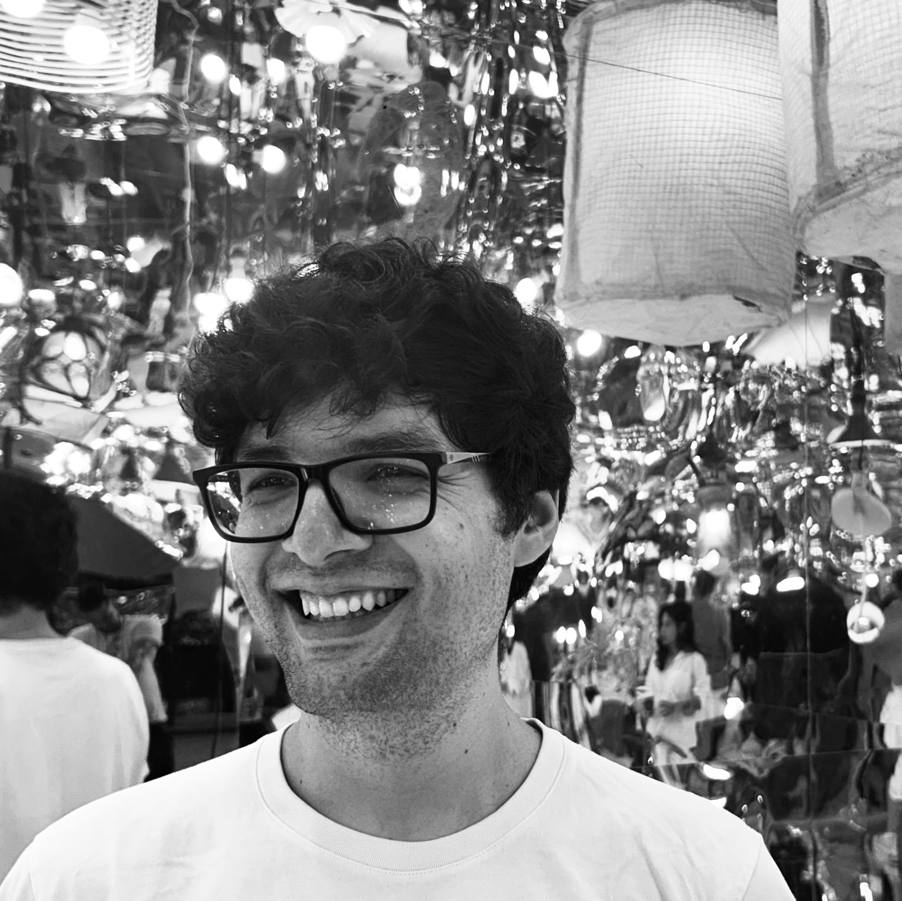

// FILM · TELEVISION · DOCUMENTARY
Pedro Paz
SESSION TC
01
Credits
02
Sound Map
// CLICK A PIN TO PLAY A FIELD RECORDING
03
About

My goal is to build soundscapes in service of the story. Mixing and editing with focus on clarity and world building.
Based in New York City, I work across feature films, episodic television, and documentaries, collaborating with directors, editors, and producers from spotting sessions through final mix. Comfortable delivering to theatrical, broadcast, and streaming specifications, including 5.1 / 7.1 and immersive formats.
- Re-recording & Final Mix
- Dialogue & ADR Editing
- Sound Effects & Foley Editing
- 5.1 / 7.1 / Dolby Atmos
- Netflix & Broadcast Delivery Specs
04
Let's work together!
Available for feature, episodic, and documentary projects.
pedro97paz@gmail.com